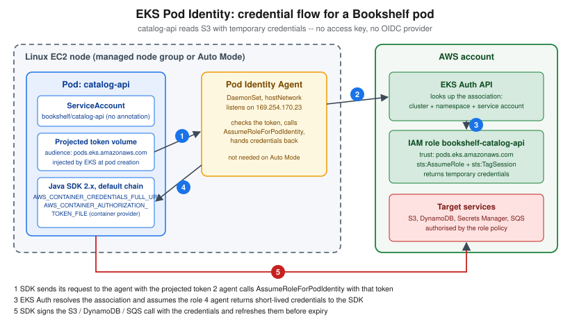

Deploying Microservices on EKS
|
This content was generated with the assistance of AI and should be verified against the official documentation before being relied on in production. |
Examples on this page target the AWS CLI v2 (2.37 line), eksctl 0.230, kubectl within one minor version of the
cluster, Helm 4, Amazon EKS Kubernetes 1.36 (the newest version in standard support; 1.35 and 1.34 are also in
standard support, 1.33 to 1.31 are in extended support), AWS Load Balancer Controller 3.5 (Helm chart 3.5.0) with
Gateway API 1.6 CRDs, and KEDA 2.21 (all checked 2026-10-01). EKS supports each Kubernetes minor version for 14
months of standard support followed by 12 months of extended support at an extra per-cluster-hour charge, and
extended support is on by default, so check aws eks describe-cluster-versions and the
EKS Kubernetes version lifecycle page
before planning an upgrade.
This page is deliberately scoped to workload deployment: the Bookshelf services (catalog-api, orders-api,
notifier) running as Kubernetes resources on an already existing cluster. Creating bookshelf-eks itself — Auto Mode versus managed node groups versus Fargate profiles, access entries, add-ons, upgrades and cluster
pricing — is on EKS Clusters. Generic Kubernetes concepts (Pods, Deployments, Services,
probes, RBAC, Helm basics) live in the Kubernetes section and are not repeated
here; only what is specific to running them on AWS is. The images come from the ECR repositories described in
Container Registry, and the databases, queues and buckets the pods call are covered on
Amazon RDS, Amazon Aurora, Amazon DynamoDB,
S3 Object Storage and Messaging and Integration. For the broader question
of whether a workload belongs on EKS at all, see Choosing a Compute Service and the decision
table near the end of this page.
export AWS_REGION=us-east-1
export ACCOUNT_ID=$(aws sts get-caller-identity --query Account --output text)
export CLUSTER=bookshelf-eks
export REGISTRY="$ACCOUNT_ID.dkr.ecr.$AWS_REGION.amazonaws.com"
aws eks update-kubeconfig --name "$CLUSTER" --region "$AWS_REGION"
kubectl get nodesReference: aws eks update-kubeconfig, aws sts get-caller-identity.
Region us-east-1 and the account ID 111122223333 used in manifests are placeholders; substitute your own.
Request path overview
With the default ip target type the ALB sends traffic straight to pod IP addresses in the VPC (the VPC CNI gives every
pod a VPC address), so there is no NodePort hop and no kube-proxy double load balancing. Every arrow from a pod to an
AWS service is authorised by an IAM role through Pod credentials: EKS Pod Identity, not by keys.
The Bookshelf services as Deployments and Services
Each Bookshelf service is an ordinary Deployment fronted by a ClusterIP Service. catalog-api and orders-api are
HTTP services reached through the load balancer layer below; notifier consumes an SQS queue, so it has no Service
and no inbound network identity at all.
apiVersion: v1
kind: Namespace
metadata:
name: bookshelf
---
apiVersion: v1
kind: ServiceAccount
metadata:
name: catalog-api
namespace: bookshelf
---
apiVersion: apps/v1
kind: Deployment
metadata:
name: catalog-api
namespace: bookshelf
labels:
app: catalog-api
spec:
replicas: 3
revisionHistoryLimit: 3
strategy:
type: RollingUpdate
rollingUpdate:
maxSurge: 1
maxUnavailable: 0
selector:
matchLabels:
app: catalog-api
template:
metadata:
labels:
app: catalog-api
spec:
serviceAccountName: catalog-api
topologySpreadConstraints:
- maxSkew: 1
topologyKey: topology.kubernetes.io/zone
whenUnsatisfiable: ScheduleAnyway
labelSelector:
matchLabels:
app: catalog-api
containers:
- name: catalog-api
image: 111122223333.dkr.ecr.us-east-1.amazonaws.com/bookshelf/catalog-api:1.4.2
ports:
- containerPort: 8080
env:
- name: AWS_REGION
value: us-east-1
- name: BOOKSHELF_UPLOADS_BUCKET
valueFrom:
configMapKeyRef:
name: catalog-api-config
key: uploads-bucket
resources:
requests:
cpu: 250m
memory: 512Mi
limits:
memory: 768Mi
startupProbe:
httpGet:
path: /actuator/health/liveness
port: 8080
periodSeconds: 5
failureThreshold: 30
readinessProbe:
httpGet:
path: /actuator/health/readiness
port: 8080
periodSeconds: 10
livenessProbe:
httpGet:
path: /actuator/health/liveness
port: 8080
periodSeconds: 20
---
apiVersion: v1
kind: Service
metadata:
name: catalog-api
namespace: bookshelf
spec:
type: ClusterIP
selector:
app: catalog-api
ports:
- name: http
port: 80
targetPort: 8080orders-api is the same shape on port 8080 with its own ServiceAccount, and notifier is a Deployment with a
ServiceAccount, no Service and no probes beyond a liveness check. Points worth noting for EKS specifically:
-
The
imageis an ECR URI. Nodes pull from ECR with the node role’sAmazonEC2ContainerRegistryPullOnly(or the older read-only) managed policy, which EKS node groups and Auto Mode attach by default; Fargate pods use the pod execution role. The pull needs no secret in the namespace. -
serviceAccountNameis the only thing that wires a pod to its AWS permissions; the Pod Identity association is made outside the manifest (see Pod credentials: EKS Pod Identity), so there is no annotation to forget and no secret in the manifest. -
The
topologySpreadConstraintsentry spreads replicas across Availability Zones; the cluster must have nodes in at least two zones for it to matter. Karpenter and Auto Mode honour it when choosing where to launch new nodes. -
Memory is limited and CPU is only requested: a CPU limit throttles Java services needlessly, while a memory limit prevents one pod starving its neighbours.
In the AWS Management Console
-
Select the Region in the top-right Region selector, then open Amazon EKS and choose Clusters →
bookshelf-eks. -
Open the Resources tab → Workloads → Deployments (filter by namespace
bookshelf) to see replicas, rollout state and the pods behind each Deployment. The console shows Kubernetes objects read-only, so applying a manifest is done withkubectl, Helm or a GitOps tool; the console is the place to confirm the result. -
Under Resources → Service and networking → Services check the ClusterIP of each Service, and under Ingresses (or Gateways, where listed) check the load balancer DNS name once Exposing services: the AWS Load Balancer Controller, Ingress and the Gateway API has reconciled it.
-
The viewing principal needs an access entry or a Kubernetes RBAC mapping; if the Resources tab says you cannot view objects, see the access-entry steps on EKS Clusters.
-
For a quick shell, open AWS CloudShell (the terminal icon in the console navigation bar), run the
aws eks update-kubeconfigcommand above and usekubectlfrom there.
Packaging Bookshelf as a Helm chart
Three near-identical Deployments are a case for a chart. The layout below deploys all three services from one
values.yaml, so an image tag bump is one --set and a rollback is one command.
bookshelf/
Chart.yaml
values.yaml
templates/
_helpers.tpl
deployment.yaml
service.yaml
serviceaccount.yaml
hpa.yaml
pdb.yaml# values.yaml
registry: 111122223333.dkr.ecr.us-east-1.amazonaws.com
region: us-east-1
services:
catalog-api:
image: bookshelf/catalog-api
tag: "1.4.2"
port: 8080
replicas: 3
expose: true
orders-api:
image: bookshelf/orders-api
tag: "1.4.2"
port: 8080
replicas: 3
expose: true
notifier:
image: bookshelf/notifier
tag: "1.4.2"
port: 8080
replicas: 2
expose: false# templates/deployment.yaml (one Deployment per entry in .Values.services)
{{- range $name, $svc := .Values.services }}
apiVersion: apps/v1
kind: Deployment
metadata:
name: {{ $name }}
labels:
app: {{ $name }}
spec:
replicas: {{ $svc.replicas }}
selector:
matchLabels:
app: {{ $name }}
template:
metadata:
labels:
app: {{ $name }}
spec:
serviceAccountName: {{ $name }}
containers:
- name: {{ $name }}
image: "{{ $.Values.registry }}/{{ $svc.image }}:{{ $svc.tag }}"
ports:
- containerPort: {{ $svc.port }}
env:
- name: AWS_REGION
value: {{ $.Values.region | quote }}
---
{{- end }}Install and upgrade:
helm lint ./bookshelf
helm upgrade --install bookshelf ./bookshelf \
--namespace bookshelf --create-namespace \
--set services.catalog-api.tag=1.4.3 \
--atomic --timeout 5m
helm history bookshelf --namespace bookshelf
helm rollback bookshelf 1 --namespace bookshelf--atomic rolls the release back automatically if the Deployments do not become ready inside the timeout, which pairs
with the readiness probes above. Charts can also be stored in ECR as OCI artifacts (helm push to
oci://$REGISTRY/bookshelf-charts); the registry mechanics are on Container Registry.
Reference: helm upgrade, Pushing a Helm chart to an Amazon ECR private repository, Deploy applications with Helm on Amazon EKS.
Helm is a client-side tool; there is nothing to click in the console. The EKS console’s Add-ons and (where enabled) Capabilities tabs are the managed alternative for platform software, covered in CI/CD: GitHub Actions to ECR to Helm and on EKS Clusters.
Exposing services: the AWS Load Balancer Controller, Ingress and the Gateway API
A ClusterIP Service is reachable only inside the cluster. To put Bookshelf on the internet, EKS needs a controller that turns Kubernetes objects into Elastic Load Balancing resources. There are two ways to get one:
- AWS Load Balancer Controller (LBC)
-
An open-source controller you install with Helm, running on any EKS compute type (Auto Mode, managed nodes, Fargate). It turns an
Ingressinto an ALB, aServiceof typeLoadBalancerinto an NLB, and, since the v3 line, a Kubernetes Gateway APIGatewaywithHTTPRoute/GRPCRouteinto an ALB andTCPRoute/UDPRoute/TLSRouteinto an NLB. You upgrade it yourself; the chart does not update automatically. - EKS Auto Mode load balancing capability
-
Built into Auto Mode clusters, nothing to install. It handles
Ingressthrough anIngressClasswhose controller iseks.amazonaws.com/alb, configured withIngressClassParams, andServiceof typeLoadBalancerthrough theeks.amazonaws.com/nlbclass. Its documentation describes Ingress and Service integration only, so for Gateway API on an Auto Mode cluster install the LBC (or another Gateway API implementation) yourself and re-check the Auto Mode documentation for changes.
Older guides show the 2020-era alb-ingress-controller or the in-tree cloud provider that creates Classic Load
Balancers. Both are obsolete: the LBC is the current open-source controller and a Service of type LoadBalancer
handled by it creates a Network Load Balancer, not a Classic one.
Installing the controller with Pod Identity
The controller itself calls AWS APIs, so it needs an IAM role; the recommended way to give it one is Pod Identity (the
same mechanism the Bookshelf pods use, explained in Pod credentials: EKS Pod Identity). Subnets must carry the discovery tags
(kubernetes.io/role/elb = 1 on public subnets and kubernetes.io/role/internal-elb = 1 on private ones); a cluster
made with eksctl already has them.
LBC_VERSION=v3.5.0
curl -o iam_policy.json \
"https://raw.githubusercontent.com/kubernetes-sigs/aws-load-balancer-controller/$LBC_VERSION/docs/install/iam_policy.json"
aws iam create-policy \
--policy-name AWSLoadBalancerControllerIAMPolicy \
--policy-document file://iam_policy.json
cat > pod-identity-trust.json <<'EOF'
{
"Version": "2012-10-17",
"Statement": [
{
"Sid": "AllowEksAuthToAssumeRoleForPodIdentity",
"Effect": "Allow",
"Principal": { "Service": "pods.eks.amazonaws.com" },
"Action": ["sts:AssumeRole", "sts:TagSession"]
}
]
}
EOF
aws iam create-role \
--role-name AmazonEKSLoadBalancerControllerRole \
--assume-role-policy-document file://pod-identity-trust.json
aws iam attach-role-policy \
--role-name AmazonEKSLoadBalancerControllerRole \
--policy-arn "arn:aws:iam::$ACCOUNT_ID:policy/AWSLoadBalancerControllerIAMPolicy"
aws eks create-addon --cluster-name "$CLUSTER" --addon-name eks-pod-identity-agent # skip on Auto Mode
aws eks create-pod-identity-association \
--cluster-name "$CLUSTER" \
--namespace kube-system \
--service-account aws-load-balancer-controller \
--role-arn "arn:aws:iam::$ACCOUNT_ID:role/AmazonEKSLoadBalancerControllerRole"
VPC_ID=$(aws eks describe-cluster --name "$CLUSTER" \
--query cluster.resourcesVpcConfig.vpcId --output text)
helm repo add eks https://aws.github.io/eks-charts
helm repo update eks
helm install aws-load-balancer-controller eks/aws-load-balancer-controller \
--namespace kube-system \
--set clusterName="$CLUSTER" \
--set region="$AWS_REGION" \
--set vpcId="$VPC_ID" \
--version 3.5.0
kubectl -n kube-system rollout status deployment/aws-load-balancer-controllerThe chart creates the aws-load-balancer-controller ServiceAccount; the association was made first so that the
controller pods get credentials from their first start. helm install also installs the controller’s CRDs, but
helm upgrade does not, so apply the CRDs from the chart’s crds directory when you upgrade. Pick the IAM policy file
that matches the controller version you install, and in a non-standard partition (GovCloud, China) use the
partition-specific file in the same repository folder.
Ingress to an ALB
The long-standing route: an Ingress with ingressClassName: alb. Annotations carry the AWS-specific settings.
apiVersion: networking.k8s.io/v1
kind: IngressClass
metadata:
name: alb
spec:
controller: ingress.k8s.aws/alb
---
apiVersion: networking.k8s.io/v1
kind: Ingress
metadata:
name: bookshelf
namespace: bookshelf
annotations:
alb.ingress.kubernetes.io/scheme: internet-facing
alb.ingress.kubernetes.io/target-type: ip
alb.ingress.kubernetes.io/healthcheck-path: /actuator/health/readiness
alb.ingress.kubernetes.io/listen-ports: '[{"HTTP":80},{"HTTPS":443}]'
alb.ingress.kubernetes.io/ssl-redirect: "443"
alb.ingress.kubernetes.io/certificate-arn: arn:aws:acm:us-east-1:111122223333:certificate/EXAMPLE-CERT-ID
spec:
ingressClassName: alb
rules:
- host: bookshelf.example.com
http:
paths:
- path: /catalog
pathType: Prefix
backend:
service:
name: catalog-api
port:
number: 80
- path: /orders
pathType: Prefix
backend:
service:
name: orders-api
port:
number: 80Several Ingresses can share one ALB with the alb.ingress.kubernetes.io/group.name annotation (an IngressGroup), which
keeps the load balancer count, and its hourly cost, down. On an Auto Mode cluster the equivalent is an IngressClass
with controller: eks.amazonaws.com/alb and an IngressClassParams object (apiVersion: eks.amazonaws.com/v1)
holding the scheme, certificate ARNs and subnets, with the ingressClassName pointing at it.
A Service of type: LoadBalancer becomes an NLB, useful for non-HTTP protocols:
apiVersion: v1
kind: Service
metadata:
name: bookshelf-tcp
namespace: bookshelf
annotations:
service.beta.kubernetes.io/aws-load-balancer-type: external
service.beta.kubernetes.io/aws-load-balancer-nlb-target-type: ip
service.beta.kubernetes.io/aws-load-balancer-scheme: internet-facing
spec:
type: LoadBalancer
loadBalancerClass: service.k8s.aws/nlb
selector:
app: catalog-api
ports:
- port: 443
targetPort: 8080The Kubernetes Gateway API to an ALB
The Gateway API is the successor to Ingress: a role-oriented model with a GatewayClass (the infrastructure provider),
a Gateway (the load balancer and its listeners, owned by the platform team) and routes such as HTTPRoute (owned by
each application team). It standardises what Ingress needed vendor annotations for: header and path matching, traffic
weighting, redirects and cross-namespace attachment. The LBC supports it from the 2.13/2.14 line and treats it as
generally available in the v3 line: L7 routes (HTTPRoute, GRPCRoute) are served by an ALB and L4 routes (TCPRoute,
UDPRoute, TLSRoute) by an NLB, and mixing both layers on one Gateway is not supported.
Install the Gateway API CRDs and the controller’s own CRDs once per cluster. The controller detects the CRDs and enables
the matching reconcilers; feature gates (ALBGatewayAPI, NLBGatewayAPI) exist only to switch them off or on
explicitly.
kubectl apply --server-side=true \
-f https://github.com/kubernetes-sigs/gateway-api/releases/download/v1.6.0/standard-install.yaml
kubectl apply \
-f https://raw.githubusercontent.com/kubernetes-sigs/aws-load-balancer-controller/refs/heads/main/config/crd/gateway/gateway-crds.yaml
# restart the controller if it was installed before the CRDs existed
kubectl -n kube-system rollout restart deployment/aws-load-balancer-controllerThe ALB Gateway for Bookshelf: one Gateway with an HTTPS listener whose certificate is set through the AWS-specific
LoadBalancerConfiguration, one HTTPRoute per service, and a TargetGroupConfiguration that picks IP targets and
the health-check path. The configuration objects must be in the same namespace as the Gateway.
apiVersion: gateway.networking.k8s.io/v1
kind: GatewayClass
metadata:
name: aws-alb
spec:
controllerName: gateway.k8s.aws/alb
---
apiVersion: gateway.k8s.aws/v1
kind: LoadBalancerConfiguration
metadata:
name: bookshelf-alb
namespace: bookshelf
spec:
scheme: internet-facing
listenerConfigurations:
- protocolPort: HTTPS:443
defaultCertificate: arn:aws:acm:us-east-1:111122223333:certificate/EXAMPLE-CERT-ID
---
apiVersion: gateway.networking.k8s.io/v1
kind: Gateway
metadata:
name: bookshelf
namespace: bookshelf
spec:
gatewayClassName: aws-alb
infrastructure:
parametersRef:
group: gateway.k8s.aws
kind: LoadBalancerConfiguration
name: bookshelf-alb
listeners:
- name: https
protocol: HTTPS
port: 443
hostname: bookshelf.example.com
allowedRoutes:
namespaces:
from: Same
---
apiVersion: gateway.networking.k8s.io/v1
kind: HTTPRoute
metadata:
name: catalog-api
namespace: bookshelf
spec:
parentRefs:
- name: bookshelf
sectionName: https
hostnames:
- bookshelf.example.com
rules:
- matches:
- path:
type: PathPrefix
value: /catalog
backendRefs:
- name: catalog-api
port: 80
---
apiVersion: gateway.k8s.aws/v1
kind: TargetGroupConfiguration
metadata:
name: catalog-api
namespace: bookshelf
spec:
targetReference:
name: catalog-api
defaultConfiguration:
targetType: ip
healthCheckConfig:
healthCheckPath: /actuator/health/readiness
healthCheckInterval: 15Certificates are not taken from the Gateway listener’s certificateRefs: set defaultCertificate in the
LoadBalancerConfiguration, or omit it and let the controller discover an ACM certificate that matches the listener
and route hostnames, which survives certificate renewal without editing manifests. The ALB’s DNS name appears in the
Gateway’s status.addresses.
kubectl -n bookshelf get gateway,httproute
kubectl -n bookshelf get gateway bookshelf -o jsonpath='{.status.addresses[0].value}'
aws elbv2 describe-load-balancers --query 'LoadBalancers[].[LoadBalancerName,DNSName,State.Code]' --output tableWeighted rollouts are expressed natively: list two backendRefs with weight values for a canary. See
Load Balancers and Gateways for the load balancer feature side (listeners, rules, target groups,
sticky sessions, WAF) and where Gateway API fits in the load balancer decision tree.
The ingress-nginx retirement and migrating
The Kubernetes project retired the community ingress-nginx controller: it reached end of life on 2026-03-24, the
repository is read-only and there are no further features, bug fixes or security patches. The Ingress API itself
is not removed from Kubernetes, and other controllers (including the LBC) continue to implement it, but a cluster that
still runs ingress-nginx is running unpatched software on its edge. Older tutorials that put an NGINX controller behind
an NLB are therefore outdated for new work. On EKS the choices are:
-
Keep the
Ingressresources and switch the class toalb(LBC or Auto Mode). Annotations that were NGINX-specific (rewrites, snippets, rate limits) have no direct equivalent: move rewrite and redirect behaviour to listener rules or the application, and rate limiting to AWS WAF. -
Move to the Gateway API with the LBC (above), translating Ingress objects with
ingress2gateway(the SIG-Network tool, 1.0 released 2026-03). The LBC project also ships its own Ingress-to-Gateway conversion tooling in the v3 line; check its release notes for the current status. -
Choose another maintained implementation (Envoy Gateway, Istio, Cilium) if you need features an ALB cannot provide, accepting that you then run and patch the data plane yourself behind an NLB.
# review how an existing Ingress would look as Gateway API objects (read-only; nothing is applied)
kubectl get ingress -A -o yaml > ingresses.yaml
ingress2gateway print --input-file ingresses.yaml --providers ingress-nginxTLS and DNS
ACM certificates are referenced by ARN (or discovered by hostname for Gateway listeners); the certificate must be in the same Region as the load balancer, and ACM renews it automatically when it is DNS-validated (see Route 53, DNS and ACM Certificates). For DNS, install ExternalDNS with a Pod Identity role that may change records in the hosted zone; it then creates and removes the Route 53 alias record for each hostname found on an Ingress, Service or HTTPRoute.
{
"Version": "2012-10-17",
"Statement": [
{
"Effect": "Allow",
"Action": ["route53:ChangeResourceRecordSets"],
"Resource": ["arn:aws:route53:::hostedzone/Z0123456789EXAMPLE"]
},
{
"Effect": "Allow",
"Action": ["route53:ListHostedZones", "route53:ListResourceRecordSets", "route53:ListTagsForResources"],
"Resource": ["*"]
}
]
}Service-to-service traffic
Inside the cluster, catalog-api calls orders-api through its Service DNS name (orders-api.bookshelf.svc.cluster.local),
resolved by CoreDNS and load-balanced by kube-proxy (or the VPC CNI’s eBPF-based networking where enabled). That is
enough for most Bookshelf traffic. For more:
-
Amazon VPC Lattice is the managed option for service-to-service networking across clusters, VPCs and accounts. The AWS Gateway API Controller maps
Gateway/HTTPRouteobjects to VPC Lattice services, with IAM-based auth policies and no sidecars. It is also the recommended replacement for App Mesh on EKS. -
AWS App Mesh is out: the service ends on 2026-09-30 and new customers could not onboard after 2024-09-24, so a guide that builds on App Mesh sidecars or its controller should not be followed for new work. Migrate to VPC Lattice, to an open-source mesh, or to plain Services.
-
Istio (or Cilium service mesh) is the self-managed alternative when a full mesh with mTLS and traffic shaping is required; it brings sidecar or ambient components to patch.
Autoscaling: HPA, KEDA and node capacity
Scaling has two layers: how many pods (HPA/KEDA) and how many nodes to hold them (Karpenter or Auto Mode, managed node group autoscaling, or Fargate where each pod is its own node).
Horizontal Pod Autoscaler
The HPA needs the Kubernetes Metrics Server. It is available as an EKS community add-on; install it once per cluster.
aws eks create-addon --cluster-name "$CLUSTER" --addon-name metrics-server
kubectl -n kube-system get deployment metrics-serverapiVersion: autoscaling/v2
kind: HorizontalPodAutoscaler
metadata:
name: catalog-api
namespace: bookshelf
spec:
scaleTargetRef:
apiVersion: apps/v1
kind: Deployment
name: catalog-api
minReplicas: 3
maxReplicas: 20
metrics:
- type: Resource
resource:
name: cpu
target:
type: Utilization
averageUtilization: 65
behavior:
scaleDown:
stabilizationWindowSeconds: 300Utilisation is measured against the CPU request, so a missing or unrealistic request breaks the HPA. Reference: Horizontal Pod Autoscaler on EKS, aws eks create-addon.
KEDA for the notifier
notifier should scale on queue depth, not CPU, and down to zero when the queue is empty. KEDA runs as an operator,
creates and drives an HPA for the Deployment, and has an SQS scaler. KEDA’s operator reads queue attributes with AWS
credentials, so it gets its own Pod Identity role.
helm repo add kedacore https://kedacore.github.io/charts
helm repo update kedacore
helm install keda kedacore/keda --namespace keda --create-namespace
aws eks create-pod-identity-association \
--cluster-name "$CLUSTER" \
--namespace keda \
--service-account keda-operator \
--role-arn "arn:aws:iam::$ACCOUNT_ID:role/bookshelf-keda-operator"
kubectl -n keda rollout restart deployment/keda-operatorThe bookshelf-keda-operator role (trust policy as in Pod credentials: EKS Pod Identity) needs only sqs:GetQueueAttributes on the queue:
{
"Version": "2012-10-17",
"Statement": [
{
"Effect": "Allow",
"Action": ["sqs:GetQueueAttributes"],
"Resource": "arn:aws:sqs:us-east-1:111122223333:bookshelf-orders-events"
}
]
}apiVersion: keda.sh/v1alpha1
kind: TriggerAuthentication
metadata:
name: aws-pod-identity
namespace: bookshelf
spec:
podIdentity:
provider: aws
---
apiVersion: keda.sh/v1alpha1
kind: ScaledObject
metadata:
name: notifier
namespace: bookshelf
spec:
scaleTargetRef:
name: notifier
minReplicaCount: 0
maxReplicaCount: 30
cooldownPeriod: 120
triggers:
- type: aws-sqs-queue
authenticationRef:
name: aws-pod-identity
metadata:
queueURL: https://sqs.us-east-1.amazonaws.com/111122223333/bookshelf-orders-events
queueLength: "20"
awsRegion: us-east-1
identityOwner: operatorReference: KEDA AWS SQS Queue scaler, KEDA AWS authentication, EKS Pod Identity.
Node capacity
When pods stop fitting, something must add nodes. On Auto Mode this is built in (Karpenter-based, with Bottlerocket
nodes replaced at most every 21 days), so a scale-out simply makes pods Pending for a short time until a node
joins. On managed node groups run Karpenter yourself (or the Cluster Autoscaler); on Fargate each pod gets its own
micro-VM and there are no nodes to scale. A NodePool defines the instance families, capacity types (On-Demand and
Spot) and consolidation policy; the details are on EKS Clusters. Because notifier is a retryable
queue worker, it is a good candidate for a Spot-only NodePool:
apiVersion: karpenter.sh/v1
kind: NodePool
metadata:
name: bookshelf-workers
spec:
template:
spec:
requirements:
- key: karpenter.sh/capacity-type
operator: In
values: ["spot"]
- key: kubernetes.io/arch
operator: In
values: ["arm64", "amd64"]
nodeClassRef:
group: eks.amazonaws.com
kind: NodeClass
name: default
taints:
- key: bookshelf/workers
effect: NoSchedule
disruption:
consolidationPolicy: WhenEmptyOrUnderutilized
consolidateAfter: 1mThe nodeClassRef shown is the Auto Mode form; self-managed Karpenter uses karpenter.k8s.aws and an EC2NodeClass.
Pods that should land there add a matching toleration and nodeSelector. Reference:
Create a Node Pool for EKS Auto Mode, Karpenter documentation.
Pod credentials: EKS Pod Identity
Bookshelf pods call S3, DynamoDB, Secrets Manager and SQS. None of them should hold an access key, and none should inherit the node’s instance role. EKS Pod Identity (the current approach) associates an IAM role with a Kubernetes ServiceAccount from the EKS API; nothing is annotated in the cluster and no OIDC provider is created.

How it works, in the order of the figure:
-
When a pod uses a ServiceAccount that has an association, EKS injects two environment variables —
AWS_CONTAINER_CREDENTIALS_FULL_URI(a link-local address served by the agent) andAWS_CONTAINER_AUTHORIZATION_TOKEN_FILE— and a projected service account token whose audience ispods.eks.amazonaws.com. -
The SDK’s default credential chain reaches its container credentials provider step and calls the Pod Identity Agent on the node (a DaemonSet using host networking).
-
The agent presents the token to the EKS Auth API (
AssumeRoleForPodIdentity), which finds the association for that cluster, namespace and ServiceAccount and assumes the role. -
Short-lived credentials are returned to the SDK, which refreshes them before they expire. Everything shows up in CloudTrail.
The IAM role and its policy
The role trusts the EKS service principal; the same trust policy works for every cluster in the account, which is why Pod Identity needs no per-cluster edits (unlike the legacy IRSA trust policy that embeds each cluster’s OIDC provider).
{
"Version": "2012-10-17",
"Statement": [
{
"Sid": "AllowEksAuthToAssumeRoleForPodIdentity",
"Effect": "Allow",
"Principal": { "Service": "pods.eks.amazonaws.com" },
"Action": ["sts:AssumeRole", "sts:TagSession"]
}
]
}The permissions policy for catalog-api grants only what that service does: read and write its own prefix in the
uploads bucket and read one secret.
{
"Version": "2012-10-17",
"Statement": [
{
"Sid": "UploadsObjects",
"Effect": "Allow",
"Action": ["s3:GetObject", "s3:PutObject"],
"Resource": "arn:aws:s3:::bookshelf-uploads-111122223333/covers/*"
},
{
"Sid": "UploadsList",
"Effect": "Allow",
"Action": "s3:ListBucket",
"Resource": "arn:aws:s3:::bookshelf-uploads-111122223333",
"Condition": { "StringLike": { "s3:prefix": ["covers/*"] } }
},
{
"Sid": "DatabaseSecret",
"Effect": "Allow",
"Action": "secretsmanager:GetSecretValue",
"Resource": "arn:aws:secretsmanager:us-east-1:111122223333:secret:bookshelf/catalog/db-*"
}
]
}The notifier role is a separate role with sqs:ReceiveMessage, sqs:DeleteMessage and sqs:GetQueueAttributes on the
queue plus ses:SendEmail on the verified identity; orders-api gets dynamodb:*Item and sqs:SendMessage on its own
table and queue. One role per workload keeps blast radius small. The statements can be narrowed further with the
session tags Pod Identity adds (such as kubernetes-namespace and kubernetes-service-account) in aws:PrincipalTag
conditions, so a single role can be reused across namespaces without being usable from the wrong one.
In the AWS Management Console
-
Create the role: open IAM → Roles → Create role, choose Custom trust policy and paste the trust policy above, attach the permissions policy, and name it
bookshelf-catalog-api. -
Open Amazon EKS → Clusters →
bookshelf-eks→ Add-ons. On a cluster that is not in Auto Mode, choose Get more add-ons, select Amazon EKS Pod Identity Agent and finish the wizard. Auto Mode clusters need no agent. -
Open the Access tab → Pod Identity associations → Create.
-
Select the IAM role
bookshelf-catalog-api(the list shows only roles whose trust policy allowspods.eks.amazonaws.com), type the namespacebookshelfand the service accountcatalog-api, and choose Create. The namespace and service account may be named before they exist. -
Roll the Deployment if its pods were already running (associations are read when a pod is created).
With the AWS CLI
aws iam create-role --role-name bookshelf-catalog-api \
--assume-role-policy-document file://pod-identity-trust.json
aws iam put-role-policy --role-name bookshelf-catalog-api \
--policy-name catalog-api --policy-document file://catalog-api-policy.json
aws eks create-pod-identity-association \
--cluster-name "$CLUSTER" \
--namespace bookshelf \
--service-account catalog-api \
--role-arn "arn:aws:iam::$ACCOUNT_ID:role/bookshelf-catalog-api"
aws eks list-pod-identity-associations --cluster-name "$CLUSTER" --namespace bookshelf
kubectl -n bookshelf rollout restart deployment/catalog-api
kubectl -n bookshelf describe pod -l app=catalog-api | grep AWS_CONTAINERThe same with eksctl, which can also create the ServiceAccount:
eksctl create podidentityassociation \
--cluster "$CLUSTER" \
--namespace bookshelf \
--service-account-name catalog-api \
--role-name bookshelf-catalog-api \
--permission-policy-arns "arn:aws:iam::$ACCOUNT_ID:policy/bookshelf-catalog-api" \
--create-service-accountApplication code
The application does nothing special: the default credential chain finds the container credentials. SDK for Java 2.x supports Pod Identity from 2.21.30; use a current 2.x release (SDK v1 for Java reached end of support on 2025-12-31).
package com.example.bookshelf.catalog;
import software.amazon.awssdk.regions.Region;
import software.amazon.awssdk.services.s3.S3Client;
import software.amazon.awssdk.services.s3.model.PutObjectRequest;
import software.amazon.awssdk.core.sync.RequestBody;
public class CoverStorage {
// No credentials provider: DefaultCredentialsProvider finds the Pod Identity container credentials.
private final S3Client s3 = S3Client.builder()
.region(Region.of(System.getenv("AWS_REGION")))
.build();
public void store(String bucket, String key, byte[] bytes) {
s3.putObject(PutObjectRequest.builder().bucket(bucket).key(key).build(),
RequestBody.fromBytes(bytes));
}
}Reference: Use Pod Identity with the AWS SDK, Default credentials provider chain (SDK for Java 2.x). For Spring Boot, Spring Cloud AWS builds its clients from the same chain; see File Storage & Object Stores.
Pod Identity versus IRSA
IAM roles for service accounts (IRSA) remains supported and is needed where Pod Identity is not available. Choose by constraint rather than preference:
| EKS Pod Identity | IRSA | |
|---|---|---|
Setup |
One EKS API call per association; trust policy names |
An OIDC provider per cluster, a trust policy per cluster and namespace/ServiceAccount, and an annotation on the ServiceAccount |
Where it works |
Pods on Linux EC2 nodes, including Auto Mode and managed node groups; not Fargate, not Windows nodes, not Outposts or EKS Anywhere |
Everywhere, including Fargate and Windows |
Cross-account |
Role in the cluster’s account, then chain a second role (or use the target-role feature where documented) |
Trust policy can name a role in another account directly |
Scale limit |
5,000 associations per cluster, no trust-policy size ceiling per role |
Trust policy size caps how many ServiceAccounts one role can serve |
Credentials delivery |
Node agent; role assumed by the EKS Auth service |
Each SDK exchanges the token with STS itself |
For pods on Fargate that need AWS access, use IRSA (eksctl create iamserviceaccount) or reconsider whether the
workload should be on EC2 nodes.
Configuration and secrets
Non-secret settings go in a ConfigMap consumed with envFrom or a mounted file (the catalog-api-config ConfigMap
referenced above holds the bucket name); the mechanics, update behaviour and Helm integration are on
Runtime Configuration. Secrets should not be copied into Kubernetes Secrets by hand: either pull them
at runtime with the SDK (the Pod Identity policy above allows secretsmanager:GetSecretValue), mount them with the Secrets
Store CSI Driver and its AWS provider (ASCP), or synchronise them with the External Secrets Operator. ASCP and External
Secrets, their SecretProviderClass and ExternalSecret syntax, rotation and the comparison with Parameter Store are
all on Secrets Manager, Parameter Store and KMS, deliberately not repeated here. Application-side loading
(Spring Cloud AWS imports) is in Configuration and Profiles, which also covers
Kubernetes ConfigMaps and Secrets from the Spring side.
Reliability: rollouts, probes, disruption budgets and spreading
The Deployment above already sets maxUnavailable: 0, a startupProbe that gives Spring Boot time to start, readiness
and liveness probes, resource requests and zone spreading. Two more objects protect the services when nodes are
replaced — which on EKS is routine: Auto Mode replaces nodes at least every 21 days, Karpenter consolidates, and managed
node groups are drained during upgrades.
apiVersion: policy/v1
kind: PodDisruptionBudget
metadata:
name: catalog-api
namespace: bookshelf
spec:
minAvailable: 2
selector:
matchLabels:
app: catalog-apiA PodDisruptionBudget that is too strict blocks node replacement (a budget of minAvailable equal to the replica count
can never be satisfied), which stalls Auto Mode and managed node group upgrades; keep minAvailable below replicas.
-
Graceful shutdown with load balancers: with
iptargets the controller deregisters a terminating pod, but traffic can still arrive for a few seconds. Add apreStophook that sleeps for 10-15 seconds, setterminationGracePeriodSecondsabove it, and consider the pod readiness gate the LBC can inject (label the namespaceelbv2.k8s.aws/pod-readiness-gate-inject=enabled) so a rollout waits until new pods are healthy in the target group, not merely Ready in Kubernetes. -
Spreading: the zone
topologySpreadConstraintsplus a second constraint onkubernetes.io/hostnamekeep replicas off one node and one Availability Zone. -
Requests and limits: the scheduler, HPA and Karpenter all work from requests; right-size them from observed usage (
kubectl top pods, Container Insights) before enabling aggressive consolidation.
Persistent storage
Stateless services need none. For a pod that does (an upload staging area), use the EBS CSI driver for single-AZ block
volumes and the EFS CSI driver for shared file systems; both are EKS add-ons. A gp3 StorageClass for an Auto Mode cluster
uses the built-in provisioner, while a managed-node-group cluster installs the EBS CSI add-on and uses ebs.csi.aws.com:
apiVersion: storage.k8s.io/v1
kind: StorageClass
metadata:
name: gp3
provisioner: ebs.csi.eks.amazonaws.com # use ebs.csi.aws.com with the EBS CSI add-on
volumeBindingMode: WaitForFirstConsumer
allowVolumeExpansion: true
parameters:
type: gp3
encrypted: "true"WaitForFirstConsumer matters because an EBS volume is tied to one Availability Zone and must be created where the pod
is scheduled. Older guides show gp2 StorageClasses; gp3 is the default and cheaper per GiB. See
Block and File Storage on AWS and File Storage & Object Stores.
CI/CD: GitHub Actions to ECR to Helm
The pipeline builds the image, pushes it to ECR and runs helm upgrade, authenticating to AWS with GitHub’s OIDC
token rather than stored keys (the federation setup, the IAM OIDC provider and the trust policy are in
Identity and Access; image build mechanics are in
Docker CI/CD with GitHub Actions and Container Registry).
name: deploy
on:
push:
branches: [main]
permissions:
id-token: write
contents: read
jobs:
deploy:
runs-on: ubuntu-latest
steps:
- uses: actions/checkout@v4
- uses: aws-actions/configure-aws-credentials@v6
with:
role-to-assume: arn:aws:iam::111122223333:role/bookshelf-github-deploy
aws-region: us-east-1
- id: ecr
uses: aws-actions/amazon-ecr-login@v2
- name: Build and push
run: |
IMAGE=${{ steps.ecr.outputs.registry }}/bookshelf/catalog-api:${{ github.sha }}
docker build -t "$IMAGE" catalog-api
docker push "$IMAGE"
- name: Deploy
run: |
aws eks update-kubeconfig --name bookshelf-eks
helm upgrade --install bookshelf ./bookshelf \
--namespace bookshelf \
--set services.catalog-api.tag=${{ github.sha }} \
--atomic --timeout 5mThe deploy role needs two kinds of permission: IAM permissions to push to the three ECR repositories and to call
eks:DescribeCluster (so update-kubeconfig works), and Kubernetes permissions, granted with an EKS access entry
rather than by editing the legacy aws-auth ConfigMap:
{
"Version": "2012-10-17",
"Statement": [
{
"Effect": "Allow",
"Action": "ecr:GetAuthorizationToken",
"Resource": "*"
},
{
"Effect": "Allow",
"Action": [
"ecr:BatchCheckLayerAvailability",
"ecr:InitiateLayerUpload",
"ecr:UploadLayerPart",
"ecr:CompleteLayerUpload",
"ecr:PutImage",
"ecr:BatchGetImage",
"ecr:GetDownloadUrlForLayer"
],
"Resource": "arn:aws:ecr:us-east-1:111122223333:repository/bookshelf/*"
},
{
"Effect": "Allow",
"Action": "eks:DescribeCluster",
"Resource": "arn:aws:eks:us-east-1:111122223333:cluster/bookshelf-eks"
}
]
}aws eks create-access-entry \
--cluster-name "$CLUSTER" \
--principal-arn "arn:aws:iam::$ACCOUNT_ID:role/bookshelf-github-deploy" \
--type STANDARD
aws eks associate-access-policy \
--cluster-name "$CLUSTER" \
--principal-arn "arn:aws:iam::$ACCOUNT_ID:role/bookshelf-github-deploy" \
--policy-arn arn:aws:eks::aws:cluster-access-policy/AmazonEKSEditPolicy \
--access-scope type=namespace,namespaces=bookshelfScoping the access policy to the bookshelf namespace means a compromised pipeline cannot touch other namespaces.
An alternative is GitOps: EKS Capabilities (announced 2025-11) can run a managed Argo CD in AWS-owned infrastructure, so the pipeline only commits the new image tag to Git and Argo CD syncs the cluster, with no cluster credentials in GitHub at all. The other capabilities (AWS Controllers for Kubernetes and kro) manage AWS resources and resource compositions from Kubernetes. Check the EKS Capabilities documentation for current availability, supported Regions and pricing before choosing it; see also Developer Tools and DevOps for CodeBuild/CodePipeline options.
Networking, security and limits at a glance
- Networking
-
Pods get VPC IP addresses from the node subnets through the VPC CNI, so subnet size limits pod count (prefix delegation and secondary CIDRs raise it; see EKS Clusters). The ALB reaches pod IPs directly, so the pod security group (or the node security group) must allow the ALB’s security group on the container port; the LBC manages those rules for you. Keep the database in private subnets and allow it from the pod or node security group; the VPC design is on VPC Networking. Pods pulling from ECR or calling AWS APIs from private subnets need a NAT gateway or VPC endpoints.
- Security
-
Pod Identity roles per workload, no node-role reliance (block pod access to IMDS or require IMDSv2 with a hop limit of one where pods are not on the host network), namespace-scoped access entries for people and pipelines, Kubernetes NetworkPolicies (enforced by the VPC CNI or Auto Mode) between namespaces, and Pod Security Admission labels on the namespace.
- Scaling
-
Pod level by HPA/KEDA, node level by Auto Mode, Karpenter or node groups. The ALB scales on its own; request a pre-warmed capacity reservation for known launch spikes. A Pod Identity association change takes seconds to propagate.
- Quotas
-
Per-account quotas to watch: ALBs and target groups per Region, targets per target group, rules per ALB listener, ENIs and IP addresses per subnet, vCPU quotas for the instance families Karpenter chooses, and 5,000 Pod Identity associations per cluster. Check Service Quotas (
aws service-quotas list-service-quotas --service-code elasticloadbalancing) before a launch.
Pricing model
Prices are not repeated here; use the Amazon EKS pricing page and the AWS Pricing Calculator. The cost drivers for a microservice deployment are:
-
the cluster hourly fee (standard support) or a higher hourly fee while a version is in extended support;
-
the compute: EC2 instances for node groups, the Auto Mode management charge on top of the EC2 price, or Fargate per vCPU-second and GiB-second;
-
load balancers: each ALB or NLB has an hourly charge plus capacity units, so one shared ALB (IngressGroup or a Gateway with many routes) is cheaper than one per service;
-
NAT gateway hours and data processing, cross-AZ data transfer (topology spread increases it, so measure), and the public IPv4 address charge on internet-facing load balancers and NAT gateways;
-
ECR storage and transfer, CloudWatch Logs ingestion from Container Insights, and the AWS services the pods call;
-
optional capabilities such as EKS Capabilities, which are billed separately.
Scale-to-zero with KEDA and Spot-based NodePools for tolerant workers are the largest levers; Savings Plans cover steady baseline compute. Cost tooling is on Cost Management and Support.
What changed recently, and what older guides still show
-
ingress-nginx reached end of life on 2026-03-24 (see above); older "Kubernetes on AWS" tutorials built on it are stale.
-
The Gateway API in the AWS Load Balancer Controller is generally available in the v3 line; guides that call the controller "Ingress only" predate it.
-
EKS Pod Identity (2023) replaced IRSA as the default for new work; guides that start with
eksctl utils associate-iam-oidc-providerdescribe the older flow. -
EKS Auto Mode (2024) bundles the load balancing, storage, networking and node components that guides install as add-ons.
-
Access entries replace the
aws-authConfigMap for cluster access. -
AWS App Mesh ends on 2026-09-30; AWS Copilot CLI (a container deployment helper for ECS) reached end of support on 2026-06-12; AWS App Runner has been closed to new customers since 2026-04-30; the in-tree AWS cloud provider creating Classic Load Balancers is not the recommended path.
-
SDK for Java v1 reached end of support on 2025-12-31; JavaScript SDK v2 ended 2025-09-08. Use SDK for Java 2.x and the modular JavaScript SDK v3.
-
Kubernetes versions move quickly: EKS standard support lasts 14 months per minor version, then 12 months of paid extended support. The
Ingress-eraextensions/v1beta1API is long gone; usenetworking.k8s.io/v1.
ECS versus EKS for microservices
| Amazon ECS (Fargate or Express Mode) | Amazon EKS | |
|---|---|---|
Deployment unit |
Task definition and service; Express Mode builds service, ALB, scaling and logging from an image and a role |
Deployments, Services, Helm charts and CRDs you own end to end |
Learning curve and portability |
AWS-specific API with a small surface; manifests do not move to other clouds |
Standard Kubernetes API and ecosystem (Helm, operators, GitOps); skills and manifests transfer across clouds |
Traffic and ingress |
ALB integration built in; Service Connect for service-to-service discovery |
Ingress or Gateway API through the LBC, VPC Lattice, or a mesh; more choice, more to operate |
Autoscaling |
Application Auto Scaling on CPU, memory, ALB request count or custom metrics; Fargate adds capacity per task |
HPA, KEDA (any event source, scale to zero), Karpenter or Auto Mode for nodes |
AWS permissions |
Task role and task execution role, no extra component |
Pod Identity (or IRSA) per ServiceAccount, plus access entries for people and pipelines |
Operational surface |
No control-plane fee and no cluster upgrades; AWS runs the orchestrator |
Per-cluster fee, minor-version upgrades every few months, add-ons and controllers to keep current |
Ecosystem |
Fewer third-party tools; CodeDeploy-free built-in blue/green, linear and canary deployments |
Large (Argo CD, Istio, Prometheus operators, databases as operators, CRDs) |
Best fit |
A handful to dozens of services, AWS-only, small platform team, want the least to operate |
Many teams and services, need CRDs or operators, a mesh, portability, or an existing Kubernetes skill base |
See ECS and Fargate and ECS Deployments, Scaling and Networking for the ECS side in depth, and Choosing a Compute Service for the wider comparison (Lambda, EC2, Beanstalk). For Compose and Swarm semantics and the generic Kubernetes comparison see Orchestration: Swarm Mode and Kubernetes, and for the OpenShift path see Kubernetes and OpenShift.
Troubleshooting
- Pod stuck
Pending -
kubectl describe podprints the scheduler’s reason. Usual causes: requests that fit on no node (so the node autoscaler must add one — on Auto Mode check NodePool limits andkubectl get nodeclaims), a topology or affinity rule that cannot be met, a PersistentVolumeClaim bound to a different Availability Zone, or no free IP addresses in the subnet. ImagePullBackOfffrom ECR-
Wrong registry Region or repository name, a tag that was never pushed, or a node role without ECR pull permission. Check with
aws ecr describe-images --repository-name bookshelf/catalog-apiand the event text. Private clusters need ECR and S3 VPC endpoints for layer downloads. CrashLoopBackOff-
kubectl logs --previousshows the last failure: a database that is unreachable (security group, secret value), a missing environment variable, or a liveness probe firing before startup finished (use thestartupProbe). AccessDeniedorUnable to locate credentialsin a pod-
Check in order that the pod uses the intended ServiceAccount; an association exists for exactly that namespace and ServiceAccount (
aws eks list-pod-identity-associations); the pod was started after the association was created; theAWS_CONTAINER_CREDENTIALS_FULL_URIvariable is present; the Pod Identity Agent DaemonSet is running (non-Auto-Mode clusters); the SDK is recent enough; the pod is not on Fargate; and the role’s permissions policy covers the exact ARN. Credentials earlier in the chain (static environment variables, a mounted credentials file) win over Pod Identity and cause a surprising identity, so remove them. - Ingress or Gateway has no address
-
kubectl describe ingressorkubectl describe gatewayand the controller log (kubectl -n kube-system logs deployment/aws-load-balancer-controller) name the failure: untagged subnets, an IAM policy older than the controller version, a certificate in another Region, a security group quota, or a Gateway whoseGatewayClassis notAcceptedbecause the CRDs were applied after the controller started. - ALB returns 503 or targets are
unhealthy -
The health-check path or port is wrong, readiness is failing, or the security group does not allow the ALB to reach the pod. Compare
aws elbv2 describe-target-healthwithkubectl get endpointslices. A 502 right after a rollout points to missing graceful shutdown or readiness gates. - HPA shows
<unknown>metrics -
Metrics Server is missing or the pod has no CPU request.
- KEDA does not scale
notifier -
Check
kubectl describe scaledobject notifier, the KEDA operator log forAccessDeniedonsqs:GetQueueAttributes, and that the operator pod was restarted after its Pod Identity association was created. - Node replacement or upgrade stalls
-
A PodDisruptionBudget with no allowed disruptions, a pod without a controller, or a local-storage pod blocks draining;
kubectl get pdb -Ashows allowed disruptions.
Clean up
Remove only what this page created, leaving bookshelf-eks and shared services in place. Delete the Kubernetes objects
first so the controllers remove the load balancers and DNS records they created, and only then delete the controllers.
helm uninstall bookshelf --namespace bookshelf
kubectl -n bookshelf delete gateway,httproute,ingress --all
kubectl delete namespace bookshelf
# wait until the ALB is gone before removing the controller
aws elbv2 describe-load-balancers --query 'LoadBalancers[].LoadBalancerName' --output text
helm uninstall keda --namespace keda
helm uninstall aws-load-balancer-controller --namespace kube-system
aws eks delete-pod-identity-association --cluster-name "$CLUSTER" \
--association-id "$(aws eks list-pod-identity-associations --cluster-name "$CLUSTER" \
--namespace bookshelf --query 'associations[0].associationId' --output text)"
aws iam detach-role-policy --role-name AmazonEKSLoadBalancerControllerRole \
--policy-arn "arn:aws:iam::$ACCOUNT_ID:policy/AWSLoadBalancerControllerIAMPolicy"
aws iam delete-role --role-name AmazonEKSLoadBalancerControllerRole
aws iam delete-policy --policy-arn "arn:aws:iam::$ACCOUNT_ID:policy/AWSLoadBalancerControllerIAMPolicy"Repeat delete-pod-identity-association for each remaining association (list them with
aws eks list-pod-identity-associations), delete the per-workload roles with aws iam delete-role-policy and
aws iam delete-role, and remove the CI deploy role’s access entry with aws eks delete-access-entry. To remove the whole
cluster, which also deletes node groups and add-ons, use eksctl delete cluster --name "$CLUSTER" after the load balancers
are gone; a leftover ALB or NLB keeps its subnets and security groups in use and makes VPC deletion fail.
Related pages
-
Deploying Microservices on AKS (the Azure counterpart)
Related open work: Kubernetes fundamentals are covered in the Kubernetes section (issue #162), and cloud API and secret managers are tracked in issue #184.